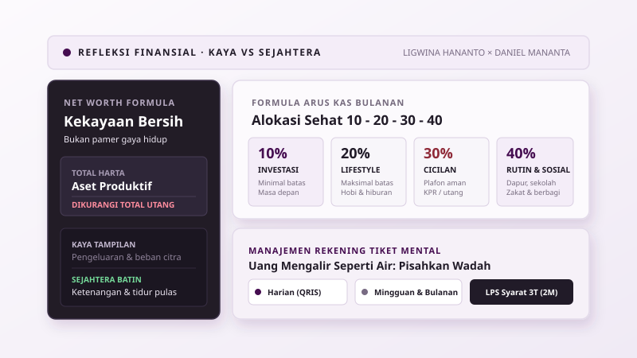

Kekayaan sejati tidak ditentukan oleh seberapa mewah gaya hidup yang mampu dipamerkan seseorang di linimasa media sosial, melainkan oleh ketenangan batin saat menjalani hari dan kesiapan aset riil saat badai kehidupan datang tanpa permisi. Banyak orang terjebak dalam perlombaan semu mengejar citra kemakmuran visual, hingga mengorbankan waktu tidur, kesehatan mental, dan hubungan keluarga demi mempertahankan pengeluaran yang sebenarnya tidak sanggup mereka tanggung. Jika ilusi ini terus dipelihara, penghasilan sebesar apa pun hanya akan menguap menjadi beban kecemasan harian yang tidak berkesudahan.
Kecemasan finansial hampir selalu berakar dari kerancuan mendasar: menyamakan status kaya dengan rasa sejahtera. Melalui dialog mendalam di kanal Sekolah Sukses, Daniel Mananta dan perencana keuangan Ligwina Hananto membongkar mitos lama seputar cara cepat kaya, mengurai sisi emosional di balik keputusan uang, serta menawarkan cara menyusun ulang arus kas keluarga secara membumi. Menata keuangan bukanlah proyek menimbun angka tanpa batas, melainkan ikhtiar merawat martabat dan ketenangan batin di tengah riuhnya panggung sosial.
Mitos Cepat Kaya dan Kebohongan Visual di Layar Media Sosial
Keinginan untuk melipatgandakan kekayaan dalam sekejap mata merupakan salah satu kerentanan emosional manusia yang paling sering dieksploitasi oleh industri spekulasi modern. Dalam obrolan bersama Daniel Mananta, Ligwina Hananto melontarkan sindiran satir yang menohok: di dunia nyata, jalur cepat menjadi kaya raya tanpa proses panjang biasanya hanya ada tiga, yaitu tindakan korupsi, praktik pencucian uang haram, atau menerima warisan dalam jumlah fantastis. Di luar ketiga jalur tersebut, setiap rupiah yang terkumpul menuntut cucuran keringat, alokasi waktu yang panjang, serta kedisiplinan mengelola kebiasaan belanja setiap hari.
Layar ponsel pintar memperparah ilusi ini dengan menghadirkan parade simbol kemewahan yang serba instan. Foto liburan ke destinasi eksotis, tiket penerbangan kelas bisnis, jam tangan mewah, hingga deretan mobil sport yang berseliweran di media sosial kerap dianggap sebagai tolok ukur kesuksesan seorang individu. Padahal, dari kacamata akuntansi dan kesehatan finansial, apa yang terlihat di depan kamera pada dasarnya mencerminkan pengeluaran, bukan kepemilikan aset yang kokoh.
| Dimensi Penilaian | Kaya Tampilan (Lifestyle Spending) | Sejahtera Finansial (Net Worth) |
|---|---|---|
| Fokus Utama | Pengeluaran konsumtif yang terlihat pihak luar | Ketenangan batin dan aset produktif yang tersembunyi |
| Kondisi Neraca | Arus kas tertekan cicilan gaya hidup dan gengsi | Total harta produktif jauh lebih besar dari total utang |
| Dampak Psikologis | Kecemasan konstan akan penurunan citra sosial | Bebas memilih pekerjaan dan tidur nyenyak setiap malam |
| Ketahanan Krisis | Rentan bangkrut saat arus pendapatan terhenti sesaat | Mampu bertahan bertahun-tahun berkat dana cadangan |
Menghitung Kekayaan Bersih Bukan Mengukur Gaya Hidup Mewah
Tolok ukur kesehatan finansial yang diakui secara universal adalah nilai kekayaan bersih atau net worth. Konsep ini sangat sederhana: hitung seluruh aset yang Anda miliki, lalu kurangi dengan seluruh kewajiban utang yang masih berjalan. Seseorang yang mengendarai mobil mewah dengan cicilan mencekik dan memiliki saldo rekening tipis sebenarnya memiliki kekayaan bersih yang jauh lebih rendah dibandingkan seorang profesional bersahaja yang memiliki rumah lunas dan portofolio investasi produktif.
Fenomena ini selaras dengan temuan klasik Thomas Stanley dan William Danko dalam riset legendaris mereka mengenai para miliarder di Amerika Serikat. Sebagian besar orang yang benar-benar kaya justru tidak memamerkan kekayaannya dalam bentuk barang-barang konsumtif yang mencolok. Morgan Housel dalam bukunya, The Psychology of Money, menegaskan bahwa menghabiskan uang demi menunjukkan kepada orang lain seberapa banyak uang yang Anda miliki adalah cara tercepat untuk membuat uang Anda semakin menipis. Kekayaan sejati adalah apa yang tidak Anda belanjakan; kekayaan adalah pilihan opsi, kebebasan waktu, dan rasa aman yang tidak kasat mata.
Mengapa Sekadar Berhemat Tanpa Alokasi Aset Tidak Akan Cukup
Pepatah lama hemat pangkal kaya sering kali ditelan mentah-mentah tanpa pemahaman literasi ekonomi modern. Berhemat adalah langkah awal yang sangat terpuji untuk menghentikan kebocoran uang, tetapi sekadar menahan belanja dan menumpuk uang tunai di tabungan konvensional tidak akan membawa seseorang pada kemandirian finansial. Nilai riil uang yang hanya didiamkan di rekening perbankan biasa akan tergerus oleh laju inflasi tahunan, biaya administrasi bulanan, dan kenaikan biaya hidup keluarga.
Menabung tanpa diimbangi strategi alokasi aset produktif, investasi berkala, dan perlindungan asuransi ibarat berusaha mengisi ember yang bocor halus di bagian dasarnya. Seperti halnya prinsip merawat ruang digital yang sehat dalam menjaga kesederhanaan dan membuang beban berlebih, kunci kesejahteraan finansial jangka panjang bukanlah menyiksa diri untuk tidak menikmati hidup, melainkan keahlian mengalirkan surplus pendapatan ke instrumen produktif secara konsisten.
Menemukan Angka Cukup untuk Menghentikan Kecemasan Finansial
Banyak orang bertanya-tanya mengapa rasa cemas terhadap masa depan tidak kunjung hilang meskipun gaji atau omzet bisnis mereka telah naik berkali-kali lipat dibanding lima tahun lalu. Jawaban psikologis atas pertanyaan tersebut sangat sederhana: mereka tidak pernah menetapkan secara sadar berapa sebenarnya angka cukup untuk kehidupan mereka sendiri. Tanpa adanya batas definisi yang jelas, manusia secara alami akan terus terjebak di atas roda hedonic treadmill, di mana standar keinginan akan langsung melonjak begitu pendapatan bertambah.
Ketika seseorang tidak memiliki angka acuan yang terukur, setiap kenaikan gaji hanya akan memicu kenaikan pengeluaran gaya hidup yang baru. Rumah yang lebih besar menuntut biaya pemeliharaan yang lebih tinggi, lingkungan pergaulan baru memicu tuntutan pakaian bermerek, dan lingkaran perlombaan status sosial pun berputar kembali. Ketenangan batin baru dapat diraih ketika kita berani mengambil selembar kertas, menghitung kebutuhan konkret keluarga, dan menetapkan batasan hidup nyaman yang realistis bagi diri sendiri tanpa peduli pada standar orang lain.
Perbedaan Mendasar Antara Angka Rekening dan Ketenangan Batin
Kaya dan sejahtera adalah dua kondisi yang bekerja di ranah kesadaran yang sangat berbeda. Kaya berorientasi pada persepsi luar dan akumulasi angka nominal di rekening bank, sedangkan sejahtera berakar pada perasaan aman dan kebebasan batin. Seseorang dikatakan sejahtera secara finansial ketika ia mampu membayar cicilan rumah tanpa dihantui rasa takut kehabisan uang makan, atau ketika ia bisa mengajak keluarga berlibur tanpa mengorbankan pos tabungan pendidikan anak.
Riset empiris yang dilakukan oleh ekonom peraih Nobel Angus Deaton bersama Daniel Kahneman di Universitas Princeton menunjukkan bahwa peningkatan pendapatan memang meningkatkan kepuasan hidup hingga pada ambang batas kebutuhan dasar dan rasa aman terpenuhi. Namun, di atas titik kesejahteraan tersebut, penambahan nominal uang tidak lagi memberikan dampak signifikan terhadap kebahagiaan harian jika tidak dibarengi oleh manajemen ekspektasi. Ketenangan finansial lahir saat kita tahu persis bahwa kebutuhan hari ini tertutup rapi, dana darurat tersedia untuk keadaan tak terduga, dan masa depan anak-anak telah dipersiapkan dengan rencana yang terukur.
Beban Emosional Masa Lalu dan Peran Mekanisme Berbagi
Keputusan finansial seseorang jarang sekali diambil murni berbasis logika matematika atau perhitungan lembar kerja. Pakar psikologi finansial Dr. Brad Klontz menemukan bahwa setiap individu membawa money scripts atau keyakinan bawah sadar mengenai uang yang terbentuk sejak masa kanak-kanak. Pengalaman melihat orang tua bertengkar karena kekurangan uang, trauma kemiskinan keluarga, atau sebaliknya pola asuh yang memanjakan materi akan membentuk cara pandang seseorang terhadap rasa aman saat dewasa.
Salah satu fenomena emosional yang sering dialami oleh mereka yang berhasil bangkit secara ekonomi adalah rasa bersalah atas kelimpahan atau survivor guilt. Ketika kondisi finansial kita jauh lebih baik daripada saudara atau tetangga masa kecil, muncul beban batin yang tidak nyaman. Dalam perspektif ini, instrumen berbagi seperti zakat, sedekah, infak, maupun perpuluhan memegang fungsi psikologis yang sangat menyehatkan jiwa:
- Meredakan Rasa Bersalah Eksistensial: Memberi secara terencana membongkar perasaan bahwa keberhasilan kita adalah keberuntungan egois, sekaligus mengingatkan kita pada tanggung jawab kemanusiaan.
- Menyadari Ekosistem Sosial: Tidak ada kekayaan yang dibangun sendirian di ruang hampa. Kesejahteraan lingkungan sekitar adalah benteng pertahanan sosial terbaik bagi keluarga kita sendiri.
- Menghadirkan Dopamin yang Bertahan Lama: Studi dari Elizabeth Dunn dan Michael Norton membuktikan bahwa membelanjakan uang untuk membantu orang lain menghasilkan kepuasan emosional yang jauh lebih stabil dan tahan lama dibandingkan kepuasan belanja barang konsumtif pribadi.
Realitas Kebebasan Finansial yang Bergeser Seiring Fase Kehidupan
Gagasan tentang kebebasan finansial atau gerakan pensiun dini yang populer dengan istilah FIRE sering kali digambarkan sebagai garis finis statis yang kaku. Banyak konten edukasi finansial di media sosial menanamkan narasi bahwa begitu seseorang mencapai jumlah aset tertentu dan memiliki pendapatan pasif yang menutup biaya hidup, ia otomatis terbebas dari keharusan bekerja untuk selama-lamanya. Kisah perjalanan hidup Ligwina Hananto memberikan koreksi yang sangat berharga atas mitos kesempurnaan tersebut.
Pada usia tiga puluh tiga tahun, Ligwina dan suaminya sebenarnya telah mencapai status bebas finansial saat tinggal di pinggiran kota. Gaya hidup mereka saat itu sangat sederhana dan kebutuhan bulanan tertutup rapat oleh empat keran pendapatan pasif yang terdiversifikasi: bisnis restoran, penyewaan properti, imbal hasil surat berharga, serta royalti dari buku-buku yang ia tulis. Namun, kehidupan bukanlah garis lurus yang statis di atas kanvas rencana.
Dinamika Kehidupan Nyata dan Alasan Keluar dari Status Bebas Finansial
Ketika prioritas keluarga berkembang, kalkulasi finansial di atas kertas ikut mengalami pergeseran besar. Kelahiran anak ketiga dan keputusan untuk pindah ke pusat kota Jakarta membuat struktur biaya hidup melonjak tajam, mulai dari biaya sekolah anak yang berkualitas hingga cicilan hunian di lokasi yang strategis. Di sisi lain, aset pasif juga memiliki siklus hidup dan risiko operasional tersendiri; bisnis restoran terpaksa ditutup saat pandemi melanda dan properti sewaan menuntut biaya perawatan berkala yang tidak sedikit.
Alih-alih merasa gagal karena harus kembali aktif bekerja mengelola karier dan bisnis konsultan, Ligwina memandang perubahan ini dengan sikap yang sangat dewasa. Keputusan untuk keluar dari status bebas finansial demi membiayai kenyamanan hidup keluarga dan pendidikan anak yang lebih baik adalah pilihan sadar yang sah dan membahagiakan. Dinamika ini mencerminkan teori Life-Cycle Hypothesis yang dikembangkan oleh ekonom peraih Nobel Franco Modigliani, di mana pola pendapatan, tabungan, dan konsumsi manusia memang dirancang untuk beradaptasi secara fleksibel mengikuti tahapan usia dan tuntutan biologis keluarga.
Memperlakukan Instrumen Berisiko Tinggi di Luar Pagar Rumah
Dalam perjalanan membangun aset, godaan untuk berspekulasi pada instrumen dengan imbal hasil tinggi seperti aset kripto, koin digital baru, atau saham gorengan sering kali mengaburkan akal sehat. Ligwina Hananto memperkenalkan metafora arsitektur yang sangat tajam untuk memandu pengambilan keputusan ini: perlakukan instrumen yang tidak memiliki aset dasar yang jelas ibarat menanam pohon di luar pagar rumah.
Di dalam rumah keuangan kita, terdapat fondasi pokok yang tidak boleh diganggu gugat: biaya makan sehari-hari, dana renovasi atap rumah yang bocor, biaya SPP sekolah anak, dan polis asuransi jiwa. Menaruh aset spekulatif di dalam rumah ibarat menanam pohon beringin di ruang tamu; jika pohon tersebut roboh diterpa badai, seluruh atap rumah dan keluarga di dalamnya akan hancur tertimpa. Prinsip utama dalam mengelola instrumen berisiko tinggi adalah mematuhi tiga batasan mutlak:
- Hanya Gunakan Uang Dingin: Dana yang dialokasikan harus berupa dana yang jika nilainya turun drastis hingga nol persen sekalipun, kelangsungan makan dan sekolah anak tidak terganggu sedikit pun.
- Pahami Batasan Risiko Asimetris: Pendekatan ini serupa dengan strategi Barbell yang diperkenalkan oleh Nassim Nicholas Taleb, di mana sebagian besar modal disimpan pada instrumen yang sangat aman, dan porsi kecil dialokasikan untuk eksplorasi spekulatif.
- Jangan Pertaruhkan Masa Depan Demi FOMO: Rasa takut ketinggalan tren tidak boleh menjadi alasan untuk mencairkan dana darurat keluarga demi mengejar janji keuntungan berlipat ganda dalam semalam.
Menata Arus Kas Harian dengan Formula Alokasi dan Rekening Terpisah
Niat baik untuk hidup sejahtera akan selalu layu di tengah jalan jika tidak ditopang oleh sistem operasional rekening yang disiplin. Manusia memiliki keterbatasan daya kendali diri saat melihat tumpukan saldo yang menyatu di dalam satu rekening perbankan. Ketika uang gajian bercampur aduk antara pos belanja sayur, cicilan rumah, dan tabungan investasi, otak kita akan secara keliru menganggap bahwa kita memiliki uang berlebih untuk berfoya-foya.
Untuk memutus pola kegagalan tersebut, diperlukan dua instrumen sederhana yang terbukti ampuh di lapangan: panduan rasio alokasi arus kas bulanan dan pemisahan wadah rekening berdasarkan siklus pengeluaran. Dengan memiliki rambu-rambu yang jelas, setiap rupiah yang masuk ke dalam dompet kita langsung memiliki mandat tugas yang spesifik sebelum sempat dibelanjakan secara impulsif.

Menerapkan Formula Arus Kas 10-20-30-40
Formula alokasi 10-20-30-40 yang dikembangkan oleh Ligwina Hananto bersama QM Financial telah menjadi standar acuan perencanaan keuangan yang sangat relevan dengan realitas masyarakat Indonesia. Pembagian ini mengalokasikan total penghasilan bersih bulanan ke dalam empat pos utama dengan batasan minimal dan maksimal yang tegas:
| Pos Anggaran | Porsi Alokasi | Sifat Rambu | Rincian Penggunaan Pos |
|---|---|---|---|
| Investasi & Proteksi | 10% | Batas Minimal | Tabungan dana darurat, premi asuransi, reksa dana, emas, dan dana pensiun masa depan. |
| Gaya Hidup & Hiburan | 20% | Batas Maksimal | Makan di restoran akhir pekan, langganan hiburan, hobi pribadi, busana, dan liburan santai. |
| Cicilan & Utang | 30% | Batas Maksimal | Total seluruh cicilan berjalan seperti KPR rumah, kendaraan, kartu kredit, atau pinjaman modal kerja. |
| Kebutuhan Rutin & Sosial | 40% | Plafon Operasional | Belanja dapur harian, listrik, air, internet, uang sekolah anak, serta zakat, sedekah, dan bantuan keluarga. |
Perhatikan bahwa pos cicilan utang memiliki batas plafon merah maksimal tiga puluh persen. Jika porsi utang Anda saat ini melampaui angka tersebut, arus kas Anda berada dalam zona bahaya karena pos kebutuhan pokok dan investasi masa depan pasti akan terkorbankan. Sebaliknya, porsi investasi sepuluh persen adalah batas lantai minimal yang wajib disisihkan tepat pada hari pertama gaji masuk, bukan menunggu sisa uang di akhir bulan.
Mengelola Rekening Harian-Mingguan dan Pengamanan Simpanan Bank
Uang memiliki sifat alami mengalir seperti air; ia akan selalu mengisi wadah di mana ia ditempatkan hingga habis. Teori Mental Accounting yang dirumuskan oleh peraih Nobel Ekonomi Richard Thaler membuktikan bahwa otak manusia secara psikologis memperlakukan uang secara berbeda tergantung pada label dan lokasi rekening tempat uang tersebut disimpan. Mengandalkan satu kartu debit untuk seluruh urusan hidup adalah penyebab utama kebobolan finansial.
Strategi pemisahan rekening fisik yang direkomendasikan Ligwina Hananto membagi aliran dana ke dalam empat pos wadah yang terpisah secara tegas:
- Rekening Harian: Khusus untuk transaksi spontan, pembayaran kode QRIS, ongkos transportasi, dan jajan harian. Saldo di rekening ini dibatasi secukupnya agar tidak terjadi pemborosan tanpa sadar.
- Rekening Mingguan: Didedikasikan untuk belanja kebutuhan dapur, bahan makanan segar di supermarket, dan logistik rumah tangga mingguan.
- Rekening Bulanan: Wadah penampung gaji masuk yang bertugas membayar seluruh tagihan rutin wajib, seperti cicilan KPR, listrik, air, internet, gaji staf asisten rumah tangga, dan SPP sekolah.
- Rekening Terpisah Khusus Investasi dan Dana Darurat: Rekening yang tidak terhubung dengan kartu debit belanja harian di dompet, ditujukan murni sebagai benteng pertahanan modal masa depan.
Dalam memilih produk perbankan untuk menyimpan dana darurat dan tabungan keluarga, masyarakat juga harus cerdas memahami regulasi perlindungan simpanan pemerintah melalui Lembaga Penjamin Simpanan atau LPS. Jangan mudah tergiur oleh tawaran produk simpanan atau iming-iming hadiah bunga perbankan yang melampaui batas Tingkat Bunga Penjaminan yang ditetapkan LPS.
Undang-undang penjaminan menetapkan batas maksimal nilai simpanan yang dijamin sebesar dua miliar rupiah per nasabah per bank. Namun, jaminan tersebut hanya berlaku jika memenuhi kriteria 3T yang diwajibkan oleh LPS:
- Tercatat dalam Pembukuan Bank: Dana simpanan benar-benar masuk ke dalam sistem administrasi resmi perbankan dan bukan disetorkan ke rekening pribadi oknum pegawai.
- Tingkat Bunga Tidak Melebihi Batas Penjaminan: Bunga simpanan atau total imbal hasil termasuk bonus cashback yang diterima nasabah tidak melampaui batas Tingkat Bunga Penjaminan resmi LPS pada periode berjalan.
- Tidak Melakukan Tindakan yang Merugikan Bank: Nasabah tidak terlibat dalam perbuatan melanggar hukum, penipuan, atau rekayasa kredit macet yang merusak kesehatan bank terkait.
Mengukur Keberhasilan Finansial dari Kebermanfaatan dan Memulai Langkah Hari Ini
Pada akhirnya, perjalanan mengelola keuangan akan bermuara pada satu pertanyaan paling mendasar: untuk apa sebenarnya seluruh harta ini kita kumpulkan? Membeli barang-barang mewah terbaru memang dapat memicu lonjakan hormon dopamin secara instan, namun sensasi euforia tersebut biasanya lekas memudar dalam hitungan minggu setelah barang tersebut menjadi bagian dari rutinitas harian. Perlombaan mengejar simbol status visual adalah permainan tanpa garis akhir yang melelahkan jiwa.
Bagi Ligwina Hananto, kepuasan terbesar dari kematangan finansial bukan lagi terletak pada deretan barang bermerek yang tersimpan di lemari, melainkan pada kebahagiaan saat melihat daya guna uang yang kita miliki mampu mengangkat martabat sesama manusia. Menyaksikan seorang karyawan mampu melunasi jeratan utang masa lalunya, melihat mitra kerja mampu merintis kemandirian ekonomi keluarga, dan memastikan anak-anak generasi penerus mendapatkan akses pendidikan terbaik adalah warisan nilai yang memberikan kepuasan batin sejati. Inilah esensi tertinggi dari kesejahteraan: ketika uang berhenti menjadi berhala kecemasan dan bertransformasi menjadi sarana penebar kebaikan.
Anda tidak perlu menunggu memiliki penghasilan ratusan juta rupiah untuk mulai menata ketenangan hidup ini. Dalam lima belas menit ke depan setelah menyelesaikan bacaan ini, buka aplikasi perbankan Anda dan lakukan audit sederhana atas arus kas bulan lalu. Pisahkan satu rekening khusus untuk belanja dapur mingguan, hitung rasio utang Anda agar tidak menembus batas tiga puluh persen, dan tetapkan angka riil untuk dana darurat keluarga Anda. Kesejahteraan finansial bukan hadiah kebetulan di masa depan, melainkan buah dari keputusan berani untuk hidup sadar dan cukup mulai hari ini.
Referensi
- Sekolah Sukses & Daniel Mananta Network. (2023). Cara Cepat Kaya ala Ligwina Hananto. Siniar Wawancara YouTube. https://www.youtube.com/watch?v=hjhEiO0vhdI
- Housel, M. (2020). The Psychology of Money: Timeless Lessons on Wealth, Greed, and Happiness. Harriman House.
- Stanley, T. J., & Danko, W. D. (1996). The Millionaire Next Door: The Surprising Secrets of America's Wealthy. Longstreet Press.
- Klontz, B., & Britt, S. L. (2012). How Clients' Money Scripts Predict Their Financial Behaviors. Journal of Financial Therapy, 3(1), 33-49.
- Thaler, R. H. (1999). Mental Accounting Matters. Journal of Behavioral Decision Making, 12(3), 183-206.
- Kahneman, D., & Deaton, A. (2010). High Income Improves Evaluation of Life but Not Emotional Well-Being. Proceedings of the National Academy of Sciences (PNAS), 107(38), 16489-16493.
- Dunn, E. W., Aknin, L. B., & Norton, M. I. (2008). Spending Money on Others Promotes Happiness. Science, 319(5870), 1687-1688.
- Modigliani, F. (1986). Life Cycle, Individual Thrift, and the Wealth of Nations. The American Economic Review, 76(3), 297-313.
- Lembaga Penjamin Simpanan (LPS) Republik Indonesia. (2024). Syarat Penjaminan Simpanan Perbankan dan Ketentuan Batas Maksimal 3T. https://www.lps.go.id/syarat-penjaminan